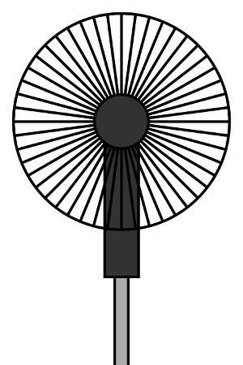

<div id="display" ng-style="display.getBg(display.bg)">
  <about ng-if="display.about" close="display.close"></about>
  <ref ng-if="display.ref" close="display.close"></ref>
  <div id="fan">
    
    
  </div>
  <div id="motherflocker">

  </div>
</div>
